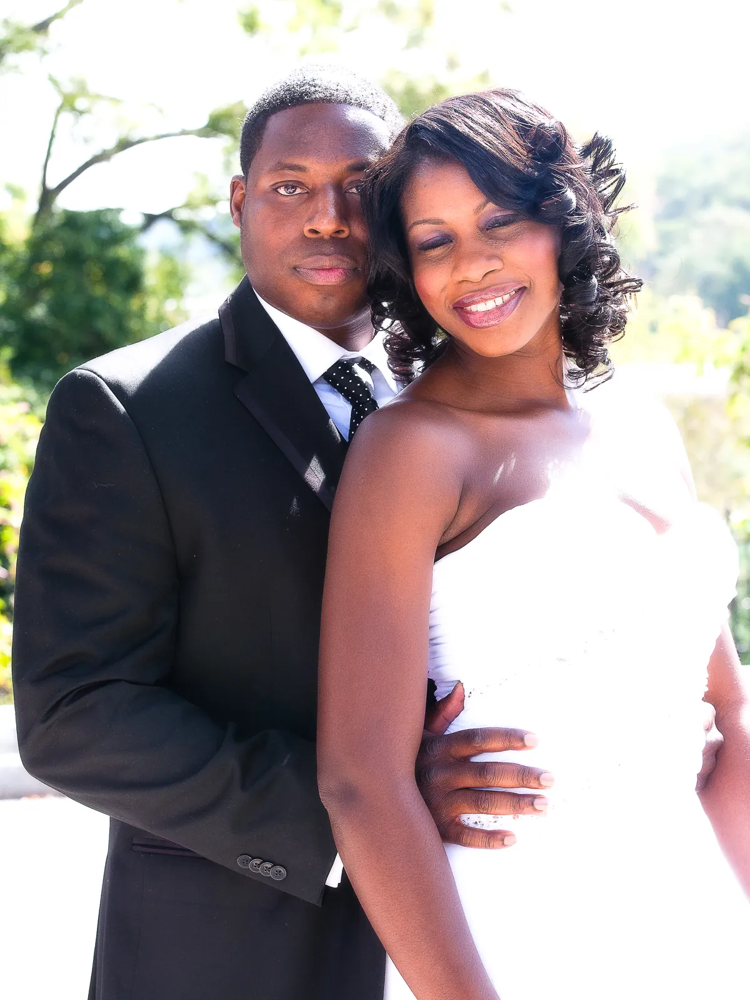
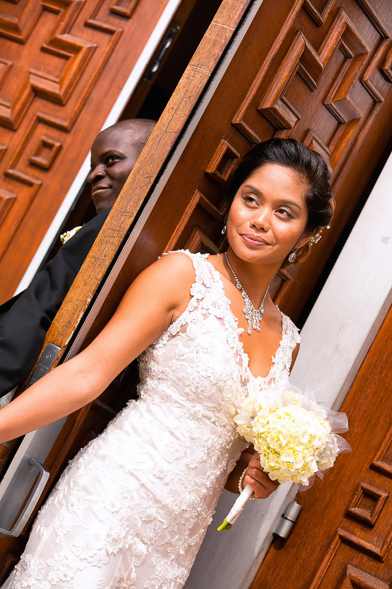
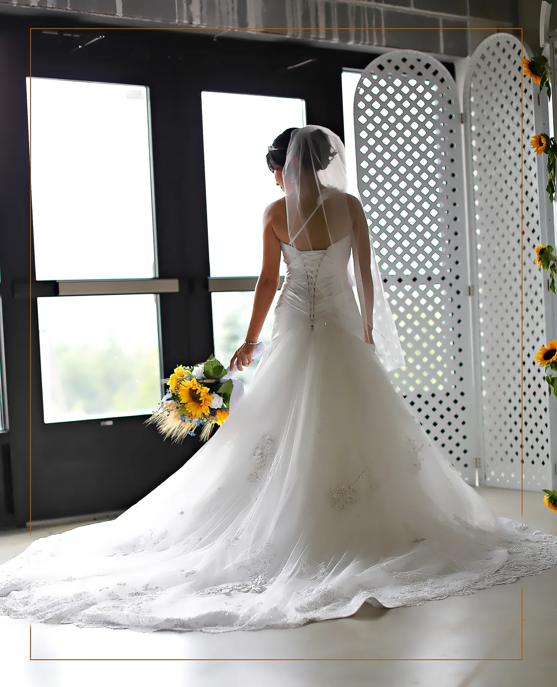
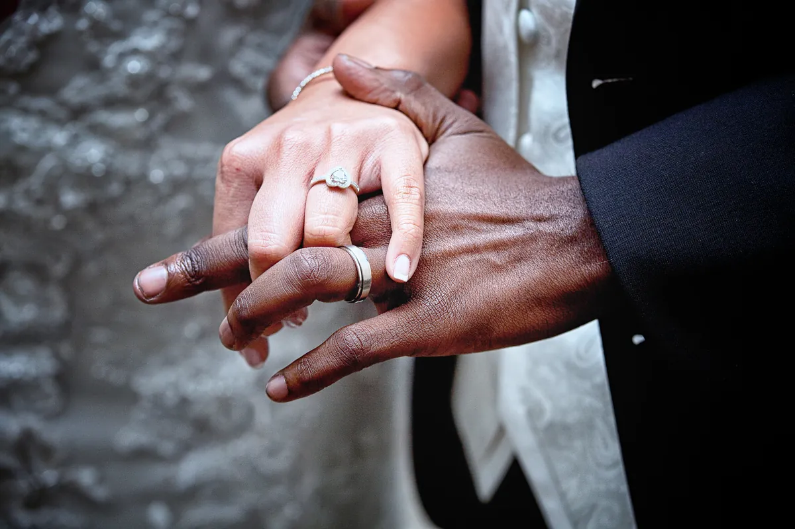

Wedding Photography in San Antonio, Texas
Editorial wedding photography in San Antonio and across Texas. Nearly thirty years of experience telling your day one honest frame at a time.




Bride and groom
Weddings
Wedding photography, done one story at a time.
The McKinnis Edit photographs weddings in San Antonio and across Texas with an editorial eye: unposed moments, family portraits that feel like you, and the small details you'll want to remember. With nearly thirty years behind the lens, Michael plans the day with you so the photography fits the celebration, not the other way around.
- Best for
- Couples who want natural, editorial wedding images
- Where
- San Antonio, Hill Country, Austin, Houston, Dallas
- Delivered
- Online gallery of edited, high-resolution images
- Booking
- Send your date to check availability
Portfolio
Weddings portfolio
Select any frame to view it larger.
How far in advance should we book?
Ideally 3 to 6 months out once your date and venue are set. Popular Texas wedding dates in peak spring and fall months book up quickly, so earlier is better during those seasons.
What's your photography style?
Editorial and natural. Most of the day is documented as it happens, with a short, relaxed portrait session and family formals guided gently.
Do you photograph weddings outside San Antonio?
Yes, including the Hill Country, Austin, Houston and Dallas.
When will we receive our wedding photos?
Your edited images are delivered in a private online gallery within 2 to 3 weeks of your wedding.
Can we meet before booking?
Yes. Send a note with your date and plans, and Michael will set up a call to talk through the day.
Contact
Let's create together
Tell us about your weddings project and when you need images. We'll come back with a plan, a date and a clear price.
- StudioSan Antonio, Texas
- Phone210-376-1166
- Emailthemckinnisedit@gmail.com